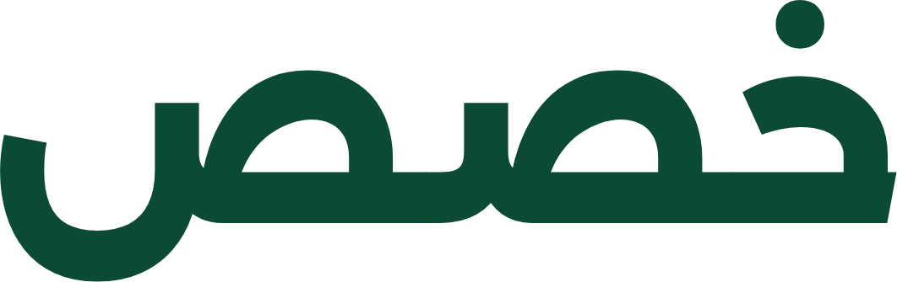

توحيد المصطلحات في النص
مفهوم واحد… صيغة واحدة في كل المواضع
١
المشكلة: مفهوم واحد بأكثر من صيغة

أيّ صيغة نكتب؟ ولماذا؟
٢
سؤال واحد يحدد الطريق
هل الصيغ مرتبطة بمصطلح في المعاجم؟
نعم · الحالة الأولى
المصطلح موجود في المعجم
نوحّد على
المصطلح المعتمد
المودل، الموديل، النموذج ←
نموذج
لا · الحالة الثانية
كلمة دخيلة ليست في المعاجم
نوحّد على
الصيغة الأكثر تكرارًا
الدرايف ×٢،
Drive
×١ ←
درايف
٣
الحالة الأولى: المعجم يربط الصيغ بمصطلح واحد
المصطلح في فهرس المعاجم
نموذج
معجم البيانات والذكاء الاصطناعي
الصيغة التي تُكتب =
المصطلح المعتمد من المعجم
، مهما كان تكرار غيره
٤
الحالة الأولى: زر التوحيد
٥
الحالة الثانية: كلمة دخيلة ليست في المعاجم
١ البحث في المعاجم
الدرايف
✗
لا مصطلح لها
Drive
✗
لا مصطلح لها
لا مصطلح معتمد نرجع إليه، فننظر في الكلمات نفسها
٢ هل هي كلمة دخيلة؟
الدرايف
✓
نادرة في المقالات العربية العامة:
0.0000029 < 0.00002
وشكلها شكل كلمة معرّبة (حروف مدّ)
Drive
✓
حروف لاتينية
رابط، الفريق
✗
عربية شائعة، تُستبعد
٣ هيكل النطق
الدرايف
←
درايف
←
d r f
Drive
←
d r f
التشابه:
1.00
(الحد الأدنى
0.75
)
صيغتان لكلمة واحدة
٦
الحالة الثانية: الأكثر تكرارًا
عدد مرات كل صيغة
الدرايف
×٢
Drive
×١
الأكثر تكرارًا «الدرايف»، تُحذف «ال» فتصير:
درايف
عند التعادل تُقدَّم الصيغة العربية على اللاتينية
٧
ضوابط تمنع التوحيد الخاطئ
يوحَّد ما هو كلمة واحدة فعلًا، ولا يُفرض شيء على الكاتب
٨
الحالتان معًا
المعجم أولًا، ثم التهجئة… والقرار الأخير للكاتب
نص متّسق بمصطلح واحد
طبقة خصص · مجمع الملك سلمان العالمي للغة العربية